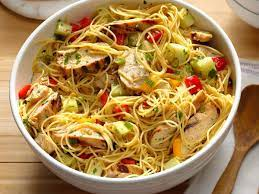

Szechwan Chichen Pasta

Description
Asian savory and spicy cold pasta dish.
Ingredients
- 1 pound (454 grams) angel hair pasta
- 3/4 cup (177 ml) soy sauce(
- 1/4 cup peanut oil
- 3/4 cup mayonnaise
- 1 T dijon mustard
- 1/4 cup oriental sesame oil
- 1/8 cup hot sesame chili oil
- 2 chicken boneless skinless breasts
- 6 green onions thinly sliced
- 1 red sweet pepper chopped
- 1/2 cup chopped fresh parsley
- 1/2 pound (227 grams) fresh snow peas trimmed
- 2 carrots peeled chopped
Steps
- Halve and saute chicken breast, cool and cut into bite size pieces.
-
At the same time as step 1, cook pasta according to the package directions.
Drain and toss in a large bowl with 1/2 cup of soy sauce - noodles will absorb
the soy sauce. Next, add peanut oil and toss. Cool at room temperature.
-
Combine in a separate bowl the mayo, mustard, sesame oil, 1/4 soy sauce and chili oil.
Refrigerate until ready to use.
-
Add the chicken, green onions, carrots, sweet pepper, and chopped parsley to the
pasta. Toss gently and add the mayo mixture, toss again, cover and refrigerage until
ready to serve, preferably overnight.
-
30 minutes before serving, remove the pasta mixture form the refrigerator and toss in
snow peas, adding a little extra soy sauce/peanut oil/mayo mixture if the pasta is too
dry.
Info
Serves 6 as a main course, 10 to 12 as a salad.